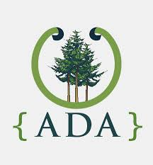

Discovering my Next Step
I learned quickly that online, there is a plethora, if not an infinite, amount of resources to learn to code. While I was insanely busy with teaching, and and a part of me was scared to take on the challenge of learning to code out of fear that I wasn't smart enough, I refused to allow those excuses to win and get the best of me.
So every night, in between moments of grading and writing curriculum, I found and made time. I devoted myself to code.
I took classes online, attended even more Meetups, listened to podcasts, and consumed the world of tech. I would lose myself into my computer; looking up after what felt like a few minutes only to realize it had been hours. Prior to coding, I had become lulled into complacency within my career. I was good at it but bored. Most things came easily and it often even felt as though there wasn’t much more I could do to improve my craft. I’ve always identified as a forever learner, claiming to be someone who is dedicated to learning more from my students and their experiences. But coding reawakened my mind to what learning really feels like (and it was more fun than I ever imagined). Reflecting on my trip to Zambia, I recognize now that I did so much more learning on that trip than actual “teaching”. Over the years, I had become comfortable existing in the teacher role and had forgotten how thrilling it is to be on the opposite end of that equation.
A lust for expanding my own mind had been ignited and I refused to turn it off. I started researching coding bootcamps but felt overwhelmed by their costs.
I felt on the precipice of a big life change when I discovered Ada. I had been keeping a list of the pros and cons of bootcamps I had been researching. And all of the sudden, one came into my periphery that only had qualities on the pro side of the page. It's a place that combines my interest in coding and desire for a collaborative and safe learning environment that dedicates an entire year to the learning process. Suddenly, I felt ready to abandon that complacent life for something so much more. Only upon discovering Ada did I feel ready to take a leap, to leave my teaching career, and to pursue something more.
And thus, I made the choice to apply to Ada Developer’s Academy’s 8th cohort of students.